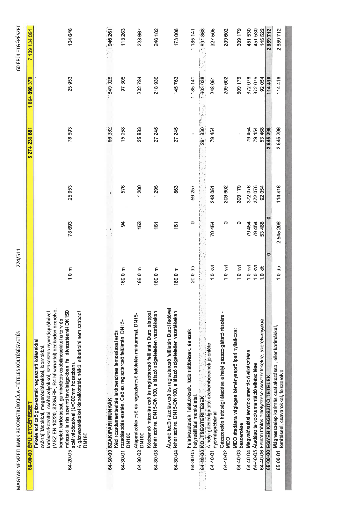

| Tétel | Menny. | Egys. | Anyag e.ár (net HUF) | Díj e.ár (net HUF) | Anyag összesen (net HUF) | Díj összesen (net HUF) | Anyag+Díj összesen (net HUF) |
|---|---|---|---|---|---|---|---|
| 60-00-00 ÉPÜLETGÉPÉSZET | NaN | NaN | 0 | 0 | 5 274 235 681 | 1 864 898 370 | 7 139 134 051 |
| Fekete acélcső gázvezeték hegesztett kötésekkel, csőhajlításokkal, megerősítésekkel, idomokkal, tartószerkezettel, csőhüvelyekkel, szakaszos nyomáspróbával (MSZ EN 10220, S235JRH, R4 hf varrattal) szabadon szerelve, komplett tartózással, gumibetétes csőbilincsekkel a terv és műszaki leírás szerinti távolságokban, fali átvezetésnél DN150 acél védőcsővel (L=300mm hosszban). A gázvezetékeket kiszellőztetés nélkül elburkolni nem szabad! DN150 | 0 | 0 | 0 | 0 | 0 | 0 | 0 |
| 64-20-05 | 1,0 | m | 78 693 | 25 953 | 78 693 | 25 953 | 104 646 |
| 64-30-00 SZAKIPARI MUNKÁK | NaN | NaN | 0 | 0 | 96 332 | 1 849 929 | 1 946 261 |
| Kézi rozsdamentesítés lakkbenzines lemosással erős rozsdásodás esetén. Cső és regisztercső felületén. DN15-DN100 | 0 | 0 | 0 | 0 | 0 | 0 | 0 |
| 64-30-01 | 169,0 | m | 94 | 576 | 15 958 | 97 305 | 113 263 |
| Alapmázolás cső és regisztercső felületén míniummal. DN15-DN100 | 0 | 0 | 0 | 0 | 0 | 0 | 0 |
| 64-30-02 | 169,0 | m | 153 | 1 200 | 25 883 | 202 784 | 228 667 |
| Közbenső mázolás cső és regisztercső felületén Durol alappal fehér színre. DN15-DN100, a látszó szigeteletlen vezetékeken | 0 | 0 | 0 | 0 | 0 | 0 | 0 |
| 64-30-03 | 169,0 | m | 161 | 1 295 | 27 245 | 218 936 | 246 182 |
| Átvonó fedőmázolás cső és regisztercső felületén Durol fedővel fehér színre. DN15-DN100, a látszó szigeteletlen vezetékeken | 0 | 0 | 0 | 0 | 0 | 0 | 0 |
| 64-30-04 | 169,0 | m | 161 | 863 | 27 245 | 145 763 | 173 008 |
| Falátvezetések, faláttörések, födémáttörések, és ezek helyreállítási munkálatai. | 0 | 0 | 0 | 0 | 0 | 0 | 0 |
| 64-30-05 | 20,0 | db | 0 | 59 257 | 0 | 1 185 141 | 1 185 141 |
| 64-40-00 KÖLTSÉGTÉRÍTÉSEK | NaN | NaN | 0 | 0 | 291 830 | 1 603 038 | 1 894 868 |
| A helyi gázszolgáltató szakembereinek jelenléte nyomáspróbánál | 0 | 0 | 0 | 0 | 0 | 0 | 0 |
| 64-40-01 | 1,0 | kvt | 79 454 | 248 051 | 79 454 | 248 051 | 327 505 |
| Gázszerelés hatósági átadása a helyi gázszolgáltató részére - MEO | 0 | 0 | 0 | 0 | 0 | 0 | 0 |
| 64-40-02 | 1,0 | kvt | 0 | 209 602 | 0 | 209 602 | 209 602 |
| MEO átadásra végleges kéményseprő ipari nyilatkozat beszerzése | 0 | 0 | 0 | 0 | 0 | 0 | 0 |
| 64-40-03 | 1,0 | kvt | 0 | 309 179 | 0 | 309 179 | 309 179 |
| 64-40-04 Megvalósulási tervdokumentáció elkészítése | 1,0 | kvt | 79 454 | 372 076 | 79 454 | 372 076 | 451 530 |
| 64-40-05 Átadási tervdokumentáció elkészítése | 1,0 | kvt | 79 454 | 372 076 | 79 454 | 372 076 | 451 530 |
| 64-40-06 Felirati táblák elhelyezése csővezetékekre, szerelvényekre | 1,0 | klt | 53 468 | 92 054 | 53 468 | 92 054 | 145 522 |
| 65-00-00 EGYÉB KIEGÉSZÍTŐ TÉTELEK | NaN | NaN | 0 | 0 | 2 545 296 | 114 416 | 2 659 712 |
| Mágnesszelep karimás csatlakozással, ellenkarimákkal, tömítéssel, csavarokkal, felszerelve | 0 | 0 | 0 | 0 | 0 | 0 | 0 |
| 65-00-01 | 1,0 | db | 2 545 296 | 114 416 | 2 545 296 | 114 416 | 2 659 712 |
